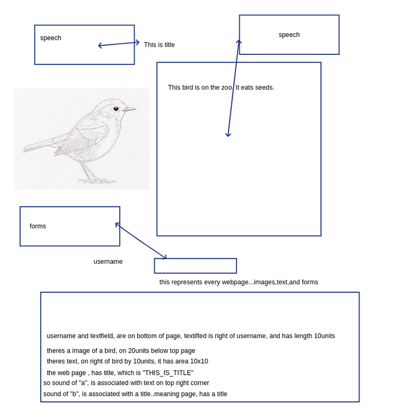
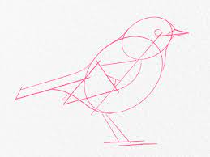
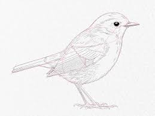

 style="width:17cm;height:17.69cm" />
Problems with accesibility..who needs it?
How do blind people navigate the web? Use of a screen reader.
Since html is text, it can be used to synthetyse speech (meaning read the tags and the text). So everything can be talked. One problem : images, and forms. Layout of the page, important to perceive as well?
Why do we need accesibility measures? To determinate a scale, which says that a page is , for example 30% accessilely? To create another page, with better ranks?
Possible aproach, convert the non-ranked metrics, to another language (easier to learn/to perceive), with that language, being better than a web page tailored for accessility ?
Save of money and time, invested on rules (creating , evaluating, etc).
Problems with reading html text
Not too much optimized (a person can limit the speed of the voice)
Not too fast
Not to accurate
html was not designed to be used by blind people (a new language would be 100% suitable for blind people..no need to evaluate pages)
New language objectives
- easy to learn
- be expressive
- no ambiguity (a text field is rectangular, so is a window)
- can be read easly be screen readers
- use of sound to do enumeraous things, like sound of "A", means its a <h1> header..to complement or substitute text? ...associate with actions?
- suitable for blind people
-another device , suitable for reading the new language
-Needs to inform the blind people , of the layout / position of www objects (mainly study dimensions)
-much easier to perceive
-represent text, images, and forms.
-faster to read
-use of sound to do something or perceive something (sound letter "A" -> <h1>, sound lettter "B" -><table>
-needs to output to a display (any display)
-use tags or not tags? tags as in <h1>
-interact with forms..or any general interaction
End objectives
Learn how blind people , perceive information, because that will be critical. Use psycologhy, artificial intelligence,linguistics,interface person machine...etc...
blind persons need geometry, to handle dimensions, and to perceive the page. For example, a window left 50cm from margin-right, a rectangle that is in center, a polygon in center. A blind person needs to know what a window is, hence it must have some knowledge of HTML concepts. HTML language, establishes some tags. Then the webmaster, use those tags, one or more times. Should blind people , learn html ?
How would blind people learn? text, sound ? blind people have a very good hearing system, (and again associated with psycology), connecting perception with sound.
A new language , would have to be learn either when kids (possible kids, tend to learn faster?) or when adults.
Blind people must have perception of space and geometry (as refered above), to know how rectangles are different, and where they are positioned. No problem in learning geometry , since it is good things for the blind people (not just reading web pages), no matter how its used (say a blind people , gets ...the bus stop is 30 meters from here)
mostly what we are assured. We have text(ok, can be read), images (can be drawned). What about forms? how to handle? ...forms means interaction with the user.
How can a blind people , interact with www pages? In this case it would interact with the new language.
Everything in a gui (desktop, web pages), is a rectangle (button,windows,icons,etc).
Interaction
How do blind people use cellular phones, and forms (web pages forms, or desktop forms). Means of interaction...new language needs to specify an easy way to handle interaction...
Do we need to convert HTML and CSS to the new language. As far as CSS goes, it would be best , if a person would choose to use the CSS. Mainly "Let me check color of H1" , and from there use style sheets...
Another language
What about , instead of a new language, convert the normal webpages, to html made for blind people? (html to html...)
convert some tags (what tags) , create other tags...rearranje html so it can be easly read by screen readers.
A major problem
interaction between blind and display (including how blind people use cell-phones, or any kind of devices)...needs to be studied. Mainly the whole problem is interacting with displays...
No need for a operating system. Use usb and a tablet. Software doesnt need o.s, could be a desktop application. on xwindows , we can put an application receiving events..those events can be anything, like keystrokes, signals, etc.
Use default keystrokes on each object. Say to terminate an app, on linux, use CTRL-C, that would also stop the web page, from being displayed...say, CTRL-X , print web page in braille.
Should the screen reader, be used to say related information from a tag? Say
<h1> hello </h1> , should the reader speaks hello and this is in tag named h1?
What should the screen reader use to read ? it would say "This site is google.pt"
can we convert images to sound? Its known that blind people, have good hearing. some frequencies associate with images for example? better use sound that braille?
convert image, to device. use pressure points on the device, so, blind people can read them. Needs several states on one bit. Use pressure points, to distinguish each state on a position.
LAYOUT PROBLEMS
should we use caracteristics of the text, or should we use raw text. Say , in html, <h1> means large text. Is this important? what if blind people , know the dimensions , and layouts, doesnt matter if text is big or not?. Is this required for a good experience with web pages?
I have a "TITLE_HERE". does it matter if its "tittle_here" ? Nope because they can't distinguish them...they can only visualize the concept..so, on title, they would visualize a big title? Again dimensions, and geometry are needed to understand from blind people.
How to perceive forms?! Again...important to know psycologhy, a.i, etc, to help perceive forms
How to use colors?
use numbers to assign colors, to make them distuiguishable...say red equals 1, green equals 2 (can also use sound)
So we can associate a sound, or number, to a concept.
Access the brain with sounds, a direct connection, to a human image system? meaning each sound would represent an image, or parts of it? several sounds represent a image?
can we resume the webpage ? (what its about, what images, and characteritics it has)
What if the whole page, were represented in device? device could use, the different texture of materials to draw a page, so blidn people could learn the shapes.
show draft to blind people
 style="width:7.228cm;height:5.415cm" />
complete image (we want this to be better than the before draft)
 style="width:7.228cm;height:5.415cm" />
the objective is to blind people perceive the complete image...
use comparasions? like, this bird has size of a known concept?
the wing, is close to other wings? again dimensions are important (geometry)
use a new device (specifically to browse web) , with some buttons (like "-> " forward, "<-" backwards, "R" reload page...etc
Either we convert text, to speech, or the text must be perceived by braille. unless sound is used....sound is used..speech is sound.
can't assing sound to text area..too many text to convert...
instead of css, use sound (like red : 1 number, position : 3 fixed top : 10 number 9 ...), or another type of css (used with a new language)